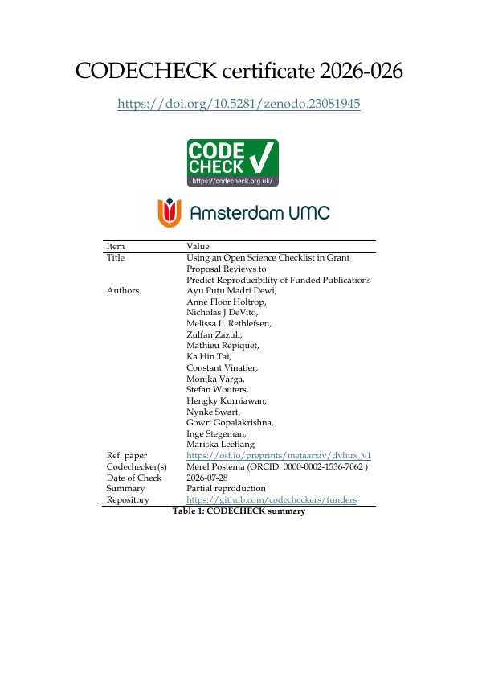

CODECHECK Certificate 2026-026

Paper details
Authors: Ayu Putu Madri Dewi , Anne Floor Holtrop , Nicholas J DeVito , Melissa L. Rethlefsen , Zulfan Zazuli , Mathieu Repiquet , Ka Hin Tai , Constant Vinatier , Monika Varga , Stefan Wouters , Hengky Kurniawan , Nynke Swart , Gowri Gopalakrishna , Inge Stegeman , Mariska Leeflang
Abstract: Obtained from CrossRef
ObjectiveTo determine whether an open science checklist can be useful for predicting the reproducibility of publications resulting from these grant proposals when used by grant referees assessing them.Study Design and SettingThis is a comparative accuracy study design using funded grant proposals obtained from online sources (i.e., Open Grants, RIO Journal, NIH, and Grantome). Two independent groups of mock referees assessed open science practices in the proposals and predicted whether the resulting publications would be reproducible, with one group using an Open Science checklist as an intervention, and the other without. Then we attempted to reproduce the primary findings of a resulting publication from the grant proposal. Sensitivity, specificity, predictive values, and overall accuracy were calculated from 2×2 tables, comparing predicted versus actual reproducibility. The primary outcome is the level of reproducibility, measured by the predictive value, the proportion of (non)reproducible study findings that are accurately predicted. This study was conducted between April and September 2025.Results Of seven out of 101 publications (6.9%, 95% CI 2.8–13.8%), the primary results could be reproduced. When using the checklist, only 16.8% of the proposals were expected to be reproducible, while without the checklist 75.2% were expected to be reproducible. When using the checklist, 17 proposals were expected to be reproducible, while only 2 out of these 17 could actually be reproduced (positive predictive value (PPV) 11.8% (95% CI 3.3–34.3%)). Without using the checklist, 76 proposals were thought to be reproducible, while only six out of 76 could actually be reproduced (PPV 7.9% (95% CI 3.7−16.2%)). Sensitivity analysis by research field was not conducted because of small sample sizes in most categories.Conclusion The Open Science checklist has a low positive predictive value, as expected given the low reproducibility prevalence in our sample. Although the differences between the group using the checklist and the group that did not use the checklist may also have been caused by their level of knowledge of reproducibility and open science, neither group could predict which proposals would or would not be reproducible.
Work publication date: 2026-02-17
OpenAlex: https://openalex.org/W7129689501
CODECHECK details
Certificate identifier: 2026-026
Codechecker name: Merel C. Postema
Time of check: 2026-07-28
Repository: https://github.com/codecheckers/funders
Full certificate: https://doi.org/10.5281/zenodo.23081945
Type: institution
Venue: AUMC
Summary:
Partial reproduction. The gt package could not be installed in the Amsterdam UMC myDRE environment (Error: Chrome debugging port not open after 10 seconds), so the gtsave() lines were commented out and the tables saved manually. Only the first rows of each table could be viewed and these were reproducible; reproducibility of the complete tables could not be verified. Two minor modifications to the original code were needed: installing missing packages and loading stringr.
Cite this certificate: Citation metadata retrieved from data.crosscite.org
https://codecheck.org.uk/ | codecheckers | Zenodo Community | ResearchEquals Collection
© team@cdchck.science | Published under CC BY-SA 4.0